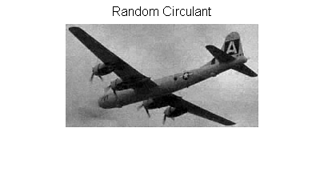

Contents
clear; close all;
rand('state',2013); randn('state',2013);
Generating data
load CropPlane;
load LearnedDict;
[n,K] = size(D);
[N1,N2] = size(X);
n1 = 8; n2 = 8;
nr = floor(N1/n1); nc = floor(N2/n2);
resnr = N1-n1*nr; resnc = N2-n2*nc;
N = nr*nc+sign(resnr)*nc+sign(resnc)*nr+sign(resnr*resnc);
sr = 0.3;
m = round(sr*N1*N2);
eta = randn(m,1);
xstart = randn(N*K,1);
Running random circulant
roM = randn(N1,N2);
rM = roM+1i*randn(N1,N2); rV = fft2(rM);
p = randsample(N1*N2,m);
rrM = real(rM); riM = imag(rM);
rell = spGetNrm(p,rrM,riM,N1,N2,m);
rell = rell.^0.5;
rNrm = reshape(rell,N1,N2);
[A_rc,D_Oper_rc] = pave_A_full_operator(p,rV,D,rNrm,N1,N2,n1,n2,K);
b = X./rNrm; b = fft2(rV.*(ifft2(b))); b = b(p);
opts = []; opts.tol = 1e-3; opts.x0 = xstart;
opts.rho = 0.01*max(abs(b))/max(abs(eta));
b = b+0.01*max(abs(b))/max(abs(eta))*eta;
theta = yall1(A_rc,b,opts);
X_rc = D_Oper_rc(theta);
Running optimized circulant
load LearnedKernel;
roV = fft2(roM);
oV = sqrt(U).*exp(2*1i*pi*rand(N1,N2));
oV = 0.6*oV/norm(oV,'fro') + 0.4*roV/norm(roV,'fro');
oM = ifft2(oV);
orM = real(oM); oiM = imag(oM);
oell = spGetNrm(p,orM,oiM,N1,N2,m);
oell = oell.^0.5;
oNrm = reshape(oell,N1,N2);
[A_oc, D_Oper_oc] = pave_A_full_operator(p,oV,D,oNrm,N1,N2,n1,n2,K);
b = X./oNrm; b = fft2(oV.*(ifft2(b))); b = b(p);
opts = []; opts.tol = 1e-3; opts.x0 = xstart;
opts.rho = 0.01*max(abs(b))/max(abs(eta));
b = b+0.01*max(abs(b))/max(abs(eta))*eta;
theta = yall1(A_oc,b,opts);
X_oc = D_Oper_oc(theta);
X_rc = real(X_rc); X_oc = real(X_oc);
Reporting
fprintf('Random Circulant: PSNR = %4.2f\n',measerr(X,X_rc,max(X(:))));
fprintf('Optimized Circulant: PSNR = %4.2f\n',measerr(X,X_oc,max(X(:))));
figure;
imshow(X_rc);
title('Random Circulant','fontsize',12);
figure;
imshow(X_oc);
title('Optimized Circulant','fontsize',12);
Random Circulant: PSNR = 27.36
Optimized Circulant: PSNR = 29.82
